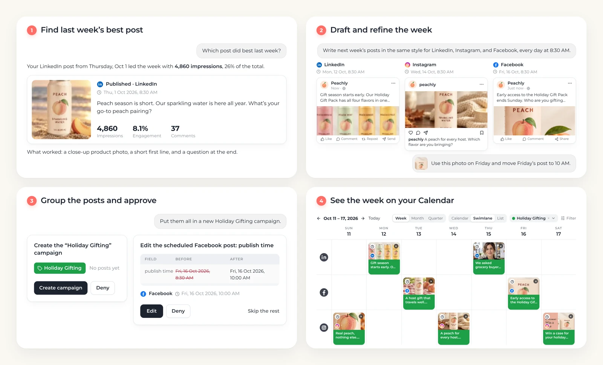
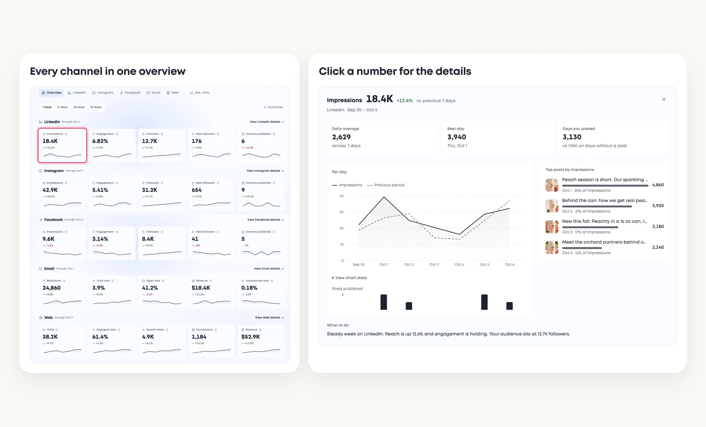
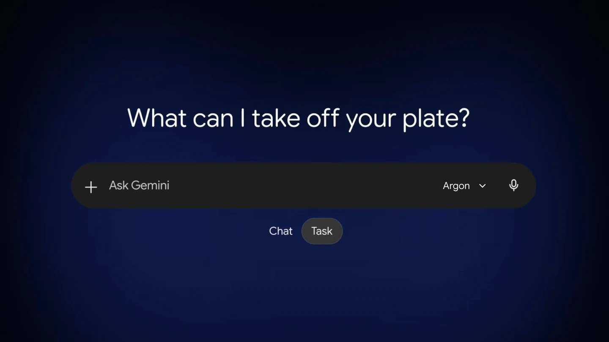
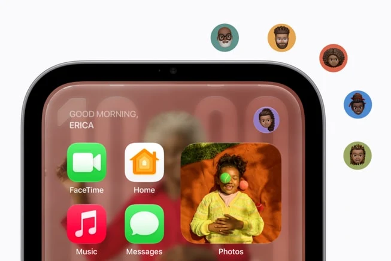

AI WEEKLY · 周报试刊 / PILOT · REVISED EDITION
From product screens to real operational work
7 product & developer signals · 3 real-workflow demand candidates
News window: October 12–14, 20:10 Toronto. A Wednesday-cutoff pilot, not a full week.
01 / How the products actually work
MorningAI: GitHub → edit → preview → publishGemini: Chat / Task, background work and codeApple: people, shared screens and locksAgentScope, TIPER, Deep Review, Earth AI
02 / Vertical ops glue
Manuals: migrate and validate 100+ variantsSubtitles: Office edits safely back into SRTParts: physical return to supplier creditOriginal requests, native coverage, small tests
Revision checked October 15, 2026 UTC. Prices are live checks; demand cases are older problems rechecked now.
AI WEEKLY · Partial-week pilot01 / 22
产品操作 / PRODUCT WORKFLOW · H01
MorningAI: run a promotion from site edits to scheduling and results
 Official demo / MorningAI
Official demo / MorningAIThe actual workflow
Connect GitHub in Brand DNA → Connectors, then switch Agentsfrom Chat to Website. The agent reads the site, makes a planand builds the requested change. Its example adds astore-locator page grouped by state and a homepage button.Editable elements include copy, images, layout and links; userscan supply photos or documents. Preview offers desktop, tabletand phone views, with a review link for an engineer. Publish isthe explicit go-live action.
Entry, price & availability
Entry: app.morningai.com. Website editing requires a GitHubconnection. The October 12 announcement invites users to try itbut gives no feature-specific plan, price or quota.
S0102 / 22
产品拆解 / PRODUCT DETAIL · H01
MorningAI: capabilities, cost and practical use
Beyond generating captions
A second workflow starts with last week’s successful posts, thengenerates captions and images for LinkedIn, Instagram and Facebookwith platform previews. Users adjust time, image and copy beforeapproving the schedule. Related posts sit inside a campaign that canbe renamed or recoloured; Calendar opens filtered to it. An Agentsidebar on Calendar supports further edits without returning to themain chat.
Results return to the same workspace
Channels Overview aligns social, Klaviyo email, Google Analytics andSearch Console metrics to one date range. Clicking a metric opensdaily detail and associated posts; email includes Campaigns/Flows,while web includes pages, searches and sources. Unlike copyingchat-generated text into a separate scheduler, campaign objects andapproval state remain in the workspace. The practical value for asmall team is fewer handoffs among content, site, calendar andreporting; no time-saving percentage has been measured here.

Official interface · MorningAI

Official interface · MorningAI
S0103 / 22
产品操作 / PRODUCT WORKFLOW · H02
Gemini Argon puts chat, background tasks, and coding within one app

Official demo / Gemini 4 ArgonTurn a conversation into ongoing work
Open the main chat window in the Gemini app and switch fromChat to Tasks. Give it a task involving connected apps. Googlenames grocery ordering, table booking, design, andbusiness-building, with examples including Instacart,OpenTable, Adobe, and Shopify. Work can continue while theuser is away from the computer, with more frequent progressreporting during longer tasks.
Entry, price & availability
The app rollout began October 13 for Google AI Pro and Ultrasubscribers; the embedded Antigravity surface is specifically in themacOS app. Developer access is through the paid API, with Ultraaccess identified for AI Studio and Antigravity. Neitherannouncement gives subscription amounts, token prices, quotas,or a complete country/language list.
S02 · S0304 / 22
产品拆解 / PRODUCT DETAIL · H02
Gemini 4 Argon: capabilities, cost and practical use
Move into coding on a Mac
Use the newly embedded Antigravity agentic coding interface insidethe Gemini macOS app to move between chat and coding.
Developer entry points
Paid Gemini API access starts in Google AI Studio or Android Studio;Google AI Ultra subscribers can also try the model in AI Studio andGoogle Antigravity. The announcement links to the Argon DeveloperGuide, Antigravity instructions, an Android Studio walkthrough, androbotics examples.
Why the interaction matters
For consumers, the concrete value is connecting a goal such asdinner planning, grocery ordering, or design to the relevant serviceand letting the task continue while they are away. For developers,discussion, code changes, and longer migrations gain more closelyconnected entry points. The announcements provide no measuredtime savings or task-completion results.
S02 · S0305 / 22
产品操作 / PRODUCT WORKFLOW · H03
Apple’s home lineup links the shared screen, doorbell and lock

Official demo / Apple HomeView + Home CollectionApproach to reveal a personal view
Set up the device and multiple users with a compatible iPhoneor iPad running the latest software. From across the room thescreen presents simpler information; approaching adds detail,while face recognition selects that user’s Home Screen, apps,and widgets. Personal content such as Messages and Calendaradditionally requires the paired iPhone or iPad to be presentand recently unlocked.
Entry, price & availability
None had shipped by the cutoff: HomeView is announced forNovember 13 and accessories from December. Video AI needscompatible devices/hubs and eligible iCloud+; recording capacity isnot the AI quota. Prices retain their UK GBP and Canadian CADbasis, not a global price.
S04 · S0506 / 22
产品拆解 / PRODUCT DETAIL · H03
Apple HomeView + Home Collection: capabilities, cost and practical use
Kitchen tasks and home controls
Speak to Siri AI or use touch. Web recipes can be converted intostep-by-step instructions, with voice-operated timers and ingredienttracking while cooking. Reply to messages by voice or the onscreenkeyboard; Center Stage reframes FaceTime calls as participants movearound. A Siri conversation started on HomeView can sync throughiCloud and continue in the Siri app on iPhone, iPad, Mac, AppleWatch, or Vision Pro. Use the Home Modular face for favoriteaccessories or the Home Camera face for up to nine simultaneous livecamera feeds. Use touch or Siri to adjust thermostats, lights, locks,and blinds. Compatible cameras and a supported iCloud+ plan addevent recognition and text descriptions of recorded clips.
HomeView pricing and delivery
The UK release lists tabletop and wall-mounted models at £299 each;wall-mount accessories cost extra. Preorders opened October 13,with delivery announced for November 13. Initial markets includeCanada, the US and UK; no EU sale. Siri AI starts in English, withCanadian French later. Personal context needs an AppleIntelligence-enabled paired device; some server features have dailylimits.

Official interface · Apple HomeView + Home Collection
S04 · S0507 / 22
产品拆解 / PRODUCT DETAIL · H03
Apple HomeView + Home Collection: capabilities, cost and practical use
Start setup with a tap
Use an iPhone running the latest system software for NFC pairing. Thepublished screen shows an LG Video Doorbell Wired card with a Set Upbutton. After adding the accessory to Apple Home, control it through theHome app or Siri without installing LG/Schneider apps or creating extraaccounts. Use a compatible hub such as HomeView, HomePod, HomePodmini, or Apple TV for features that require it; camera event history alsoneeds iCloud+.
How doorbells, recordings and locks work together
When a visitor rings, HomeView/HomePod chimes and the phone receives anotification. One Home view supports seeing the visitor, switching to thepackage view, talking and unlocking. The doorbell combines a 2.5K frontcamera with a Full HD lower camera. Compatible iPhone/Watch home keyssupport UWB approach unlocking, alongside tap, PIN and a key. iCloud+keeps ten days of event history; eligible plans and AI devices add summariesand natural-language search. The indoor camera physically tilts down whenthe first household member returns, making its non-monitoring state visible.
Accessory prices and integration value
Availability begins in December, with some accessories delayed until early 2027. Canadian starting prices (CAD): wired doorbell 349.95, floodlight camera549.95, plug-in outdoor camera 399.95, plug-in indoor camera 279.95; lock 479.95; LG and Schneider thermostats 279.95 each, associated temperature/roomsensors 54.95 each. Cameras are announced for the US, Canada, and UK; locks, thermostats, and sensors for the US and Canada. Installation accessories costextra, and US Apple Retail offers paid ADT installation. Existing Works with Apple Home and Matter devices already connected different brands. The new rangeadds co-designed products with a consistent path from NFC setup to Home controls. Doorbell viewing and unlocking share a view, while event search andoccupancy-based temperature adjustment reduce manual work in video timelines and fixed schedules.
S04 · S0508 / 22
产品拆解 / PRODUCT DETAIL · H04
AgentScope Java: capabilities, cost and practical use
The failing interaction
A developer spawns two agents named researcher in one turn andconsumes thinking, text and tool events through streamEvents(). On2.0.x their source label is the same parentSession/researcher path. AUI grouping by source interleaves both tasks. The reportedworkaround bans same-name parallel dispatch in the prompt andfalls back to an unsplittable display, trading concurrency forreadability.
The correction inside the discussion
Current main already has execution identity, including sessionId,turnId and runId. The reporter subsequently confirmed it works forparallel same-name children. Consumers can group forwardedevents by execution; START/END wrappers need their sessionId andreplyId pairing separately. The 2.0.x line lacks that field. Amaintenance-line PR proposes childSessionId, preserving theinnermost identity across nested forwarding rather than overwritingit at every hop.
A second actionable integration detail
A separate discussion distinguishes compaction, which summarizesthe current request context, from memory, which persists andconsolidates information beyond the session. If the model reports nocontext window, the token trigger falls back to 160k; a smaller realwindow can overflow first. Check the adapter’s window andtriggerTokens rather than treating long-term memory as a fix foroversized requests. For product UI, task identity, version and budgetare meaningful visible state, not merely backend logs.
Entry & maturity
Java SDK/integration issue. Keep main distinct from 2.0.x. The reported130k overflow was not reproduced by the responder; a maintenance PRis not a shipped fix.
S06 · S0709 / 22
产品拆解 / PRODUCT DETAIL · H05
TIPER + agent-risk: capabilities, cost and practical use
TIPER: harder interaction without invalidating the task
TIPER evolves persistent simulated-user behaviour from interactionfailures, rejecting candidates that invalidate task facts or solvability.The authors report avg@3 reductions of 5.8–33.7 percentage pointsacross 12 GPT-5.4 settings. Its useful application is diagnosingweaknesses exposed by sparse information or different interactionpacing in support, booking or collaborative coding, rather thanturning one average score into a release decision.
agent-risk: first decide whether the old record is sufficient
The ai-agent-risk Python package accepts per-step scores, harm flags,costs and final failure status. replay_stop identifies episodes thatproceed unchanged or stop under a new threshold; continuationsbeyond the old record need saved-state reruns or bounds.certify_replay returns a harm bound. Instead of rerunning everythingfrom scratch, this approach targets branches with insufficientevidence, although a model swap can make old trajectories unusable.
Entry & maturity
TIPER’s paper is public, but its linked GitHub repository read as emptyduring this review, so runnable code is not confirmed. agent-riskdocuments Python ≥3.9, a quickstart and reproduction artifacts; we didnot install or reproduce it.
S08 · S09 · R01 · R0210 / 22
产品操作 / PRODUCT WORKFLOW · H06
Deep Review: upload a document, add context, receive a technical review
 Official demo / Deep Review
Official demo / Deep ReviewEntry and workflow
Open the Google Research portal and sign in with Google.Upload a PDF or paste text; optionally add custom context.Submit for review; results appear in the document list. Googlesays agents segment the document, allocate effort by section,verify in parallel, then synthesize and ground findings.
Entry, price & availability
Multi-file input is still forthcoming. The announcement specifiesPDF/text; the portal FAQ additionally lists Docs/Slides, without amatching visible import control in the retrieved page. Documentsare retained for up to one year.
S10 · S1111 / 22
产品拆解 / PRODUCT DETAIL · H06
Deep Review: capabilities, cost and practical use
Where it fits in the work
Google’s examples include architectural assumptions in designdocuments and mismatches between presentation charts andconclusions. Compared with asking a general chat model to read andcriticize a file, this interface gives submission, context and results astable home while the backend divides verification work. The usefuldistinction is a repeatable document-review task, without asking theauthor to design a reviewing prompt from scratch.
Price and access
Public worldwide. Live portal: two free weekly reviews using Gemini4 Argon Medium; extra runs use the user’s Gemini API key andmodel-call charges. Its 40-page estimate ranges from about $3 to $20by configuration.
S10 · S1112 / 22
产品操作 / PRODUCT WORKFLOW · H07
Earth AI: ask on a map, inspect the plan, or connect an agent
 Official demo / Google · video at 00:05: cooling centres, older residents and flood zones
Official demo / Google · video at 00:05: cooling centres, older residents and flood zonesEntry and workflow
Apply through the official interest form; the new deep-analysispreview is not generally available. Ask a spatial question inEarth chat and inspect mapped results. Google says eachanswer exposes its analytical plan and data sources, lettingexperts check assumptions or replace datasets. For customworkflows, the API accepts CSV, GeoJSON boundaries and cloudtables, joining them with Earth AI data.
Entry, price & availability
Baseline chat documentation says queries may behuman-reviewed and instructs users not to enter confidentialinformation. API data handling must be checked separately.
S16 · R03 · R0413 / 22
产品拆解 / PRODUCT DETAIL · H07
Earth AI: capabilities, cost and practical use
Where it fits in the work
Google reports that Milken Institute screened 1,500+ candidatebuildings using its list, Solar API and census data for communityresilience hubs. Instead of manually moving facility lists, maps andcensus data between tools, this interface connects anatural-language question to mapped results. Experts can inspectthe plan and replace data before carrying a recommendation intosite-selection work.
Price and access
Limited early access; the announcement gives no price for theexpanded preview or A2A service.
Known limits of the existing chat
Existing Ask Google Earth documentation, updated October 13,describes web/English access including Canada, a 500-feature querycap, a five-minute timeout and no export of queried results. Thesedescribe the baseline chat, not separately confirmed new-previewlimits.
S16 · R03 · R0414 / 22
需求发现 / DEMAND DISCOVERY · 2026-10-15
Three workflow candidates, starting with real requests
Start with original requests, then check native features, workarounds and payment evidence. These are older problemsrechecked now, not new launches this week.
PRIORITY INTERVIEWS
100+ manufacturing manualvariants
Consulting approval is hard: identifywho would pay for migration.
SMALL PILOT
Office subtitle revisionround-trip
Specific request; EZTitles already offersa solution; exact budget unknown.
PROCESS-SERVICE WATCH
Parts return → supplier credit
CCC already covers the function;investigate training and handoffs.
Sampling: 14 leads across two research streams, grouped by task. Freight tracking and generic repair ticketing were dropped for mature coverage orweak independent demand. This is not exhaustive coverage.
Public requests + current official counterevidence · Sources on final page15 / 22
PRIORITY INTERVIEWS · 证据与残留工作 / EVIDENCE & GAP
100 manual variants: migrate and validate one product family
The original request & date
Kizzbot reports maintaining Word work instructions and InDesignmanuals for 100+ software configurations. Management addedpart-time help. The writer considers about $3,000/year in softwareeasy to justify, while consulting costs complicate approval. This isstated budget sentiment, not a purchase commitment.Approximately Aug–Sep 2026; the page shows only “1mo ago,” so theexact posting date is unverified. Rechecked October 15.
User & current native coverage
User: sole technical writer. Approver: manufacturing management.Acceptance owner: product/engineering. MadCap Flare already hassnippets, variables, conditions and multiformat output; its postedprice is $3,150/author/year. MadCap offers migration consulting, too.Spogen Doc Builder already targets machinery product families,variants and publication preflight. Both software andimplementation competition exist.
The residual hypothesis
This user’s unresolved task is correctly decomposing 100 existingdocuments into reusable content and making the result manageablefor a nontechnical writer. Test a small, fixed-scope migration withexplicit acceptance and preserved output styling, not a claim thatcompetitors cannot do it.
Proposed handoff · editorial schematic
Parse existing documents → AI proposes repeated blocks →engineering decides what can truly be shared → configureconditions/variables → regenerate five variants → compare every page→ approve and hand over.
O01 · O02 · O03 · O04 · O05 · O0616 / 22
PRIORITY INTERVIEWS · 小交付与验收 / DELIVERABLE & TEST
100 manual variants: migrate and validate one product family
Minimum deliverable
A fixed-scope migration package: one product family, fiverepresentative manuals and 20 reusable blocks. Deliver ashared/variant map, editable source project, five comparisonoutputs, an exception list and one writer handover session. Sellcompleted migration, not another editor.
Payment evidence & proposed test
Existing spend: reported part-time headcount. Budget sentiment:around $3,000/year for software. A separatemanufacturing-formatting job’s search cache shows $10–15/hour,25–30 files and one hire, but its live page is closed; it is not a currentopportunity or verified contract value. Proposed test, not marketpricing: $300 for a five-document reuse audit, creditable toward acapped $1,000 implementation pilot; licenses extra. No full unpaidmigration without sample access, an approver and a paid diagnostic.
Costs & human approval
AI suggests matches and differences. Image extraction, conditionmodeling, pagination regression and review dominate cost. Anillustrative 20 hours at $40 internal cost is $800, leaving only $200 of a$1,000 fee for other costs, not a 95% profit margin.
Success & stop conditions
One approved edit updates all five applicable variants;nonapplicable variants remain unchanged; images, numbering andwarnings survive; the writer can perform the next updateindependently. If two sample regressions still miss or misapplycritical changes, or every output needs manual relayout, stop scalingto 100 manuals and quote conventional migration work.
O01 · O02 · O03 · O04 · O05 · O0617 / 22
SMALL PILOT · 证据与残留工作 / EVIDENCE & GAP
Bring client Word/Excel subtitle revisions safely back into SRT
A specific blocked workflow
Small localization teams or production shops retaining SubtitleEdit/Premiere while clients insist on Office-based review Subtitlediffs are awkward to share for approval; external edits must bereconciled to cues, with overflow, deleted rows and version conflictschecked. Requests Word tracked-change or timecoded before/afterExcel exports. A May 2026 workaround exports custom text butexplicitly does not reimport into SE. The issue page remains open.Original request: May 24, 2025; relevant reply: May 8, 2026. This is oneauthor’s specific request.
Counterevidence: mature tools exist
Describes messy client revisions, overly long edits and line-by-linecomparison; also documents an existing EZTitles RTF round-trip withreading-speed limits. OOONA covers reading speed and technical QC;Closed Caption Creator already provides QC and Excel reports.
A narrow adapter hypothesis
An adapter for teams that will not switch tools: stable cue IDs, Officereview packs, selective revision acceptance, conflict lists andreimportable SRT. Advantage over EZTitles/CCC is unproven.
Proposed handoff · editorial schematic
Original SRT → stable cue-ID review pack → Office edits → humanacceptance → deterministic timecode/QC → reversible SRT
O12 · O13 · O14 · O15 · O1618 / 22
SMALL PILOT · 小交付与验收 / DELIVERABLE & TEST
Bring client Word/Excel subtitle revisions safely back into SRT
Replay a revision before building a plugin
Replay one completed project from each of two teams: original SRT,client-edited Office file, final SRT. Measure reconciliation time andmismatches. Prototype stable IDs/timecodes, selective acceptance,overflow warnings and reversible diffs only. Test a fixed-price servicebefore building a plugin.
What the $50 job actually establishes
Willingness to pay for this exact revision adapter is unknown. Anadjacent awarded $50 job asks for a 55-minute documentary's Exceltimings to become SRT with a 30-second shift: evidence of paidhandoff labor, not premium pricing or subscription demand.
AI assistance and deterministic checks
AI may interpret free-form notes and propose matches;cue/timecode integrity requires deterministic checks and humanacceptance. Use ordinary scripts if sufficient.
When to stop
Stop if an existing EZTitles/CCC setup solves it in half an hour, clientswill migrate, revision volume is low, or two pilots fail to halvereconciliation work without adding cue mismatches. These areproposed test thresholds, not observed results.
O12 · O13 · O14 · O15 · O1619 / 22
PROCESS-SERVICE WATCH · 证据与残留工作 / EVIDENCE & GAP
The body part went back. Did the credit arrive?
The original request & date
On August 12, 2024, a midsize collision-shop parts manager reported20–30 returns weekly and losing sight of credits after driver sign-offand CCC entry. A respondent checks signed slips once or twiceweekly and sends scanned evidence when credits are missing.Long-running issue: primary thread August 12, 2024. April 27 andDecember 18, 2025 describe another author’s continuing situationand are deduplicated.
User & current native coverage
User: parts manager. Buyer: owner or multi-site operations lead.Participants: supplier driver and bookkeeper. CCC already providesParts Returns and Acknowledge Credits training. BodyshopConnect’s2022 manual includes Outstanding Credit Return, Receive Creditsand rules preventing RO closure with outstanding returns. Thecategory is established.
The residual hypothesis
The 2025 inventory-thread author later acknowledged that paid-forCCC already had the required features; training and owner buy-inwere missing. The saleable hypothesis is cross-person inventory,evidence cleanup and execution. A plugin need remains unproven.
Proposed handoff · editorial schematic
Check native outstanding-credit reports → label physical items andlocations → capture packaging/label photos → confirm return window→ link pickup proof → reconcile credits → assign only unresolved items.
O07 · O08 · O09 · O10 · O1120 / 22
PROCESS-SERVICE WATCH · 小交付与验收 / DELIVERABLE & TEST
The body part went back. Did the credit arrive?
Minimum deliverable
Scope one shop, two suppliers and 30 pending returns/credits.Establish location, packaging status, deadline, pickup evidence andcredit matching. Deliver an aging-risk queue, pickup evidence andunmatched-credit list, configuring native reports first.
Payment evidence & proposed test
Known: the shop pays for CCC and reports return/storage problems.Unknown: loss amounts, outsourcing budget and willingness to payextra. Do not turn 20–30 weekly returns into market size or recoveredrevenue. Proposed test: $250 for a 30-item closeout diagnostic withowner-confirmed eligibility and contacts. Test $99/month lightmanaged follow-up only after recovered/avoided loss andreview-time savings are demonstrated.
Costs & human approval
Physical counting, labels, packaging retention and staff executiondominate cost. AI can read labels/slips and propose matches; itcannot move bumpers or decide return eligibility. Customer approvalgoverns financial decisions and supplier outreach.
Success & stop conditions
All 30 items have a physical location or pickup proof, an owner and astatus. Every unmatched credit has a next action. New returns staytraceable for two further weeks. If native training solves it, finish withtraining. If the owner rejects consistent intake/labeling or laborexceeds recoverable value, do not sell an ongoing subscription.
O07 · O08 · O09 · O10 · O1121 / 22
SOURCES · 唯一参考页 / SINGLE REFERENCE PAGE
Reference links
IDs map to original sources. Click a short title to open. Vendor demo assets retain their owners’ rights; no authenticated product tests.
S01 · MorningAI Website AgentS02 · Gemini 4 Argon appS03 · Gemini 4 Argon developer accessS04 · Apple HomeViewS05 · Apple Home CollectionS06 · AgentScope event correlation issue #3525S07 · AgentScope context issue #3515S08 · TIPER researchS09 · agent-risk researchS10 · Deep Review announcementS11 · Deep Review productS15 · Research@ 2026 official roundupS16 · Earth AI experimental accessR01 · TIPER code repositoryR02 · agent-risk quickstartR03 · Geospatial reasoning demosR04 · Ask Google Earth documentationO01 · Searching for tools to make my job fasterO02 · MadCap pricingO03 · MadCap single sourcingO04 · MadCap consultingO05 · Spogen Doc BuilderO06 · Excel Specialist – Manufacturing Work InstructionsO07 · Parts ReturnsO08 · Autobody parts inventoryO09 · Body shop parts managementO10 · CCC ONE training catalogO11 · BodyshopConnect Parts Management Quick GuideO12 · Subtitle Edit #9685O13 · Practitioner: client reviewO14 · OOONA technical QCO15 · Closed Caption Creator QCO16 · Awarded $50 subtitle handoffMethod: original-source checks; event-date precision preserved; day-only paper dates have cutoff uncertainty. Prices and entry points are live revision checks.
News cutoff 2026-10-15 00:10 UTC · Demand research checked 2026-10-1522 / 22